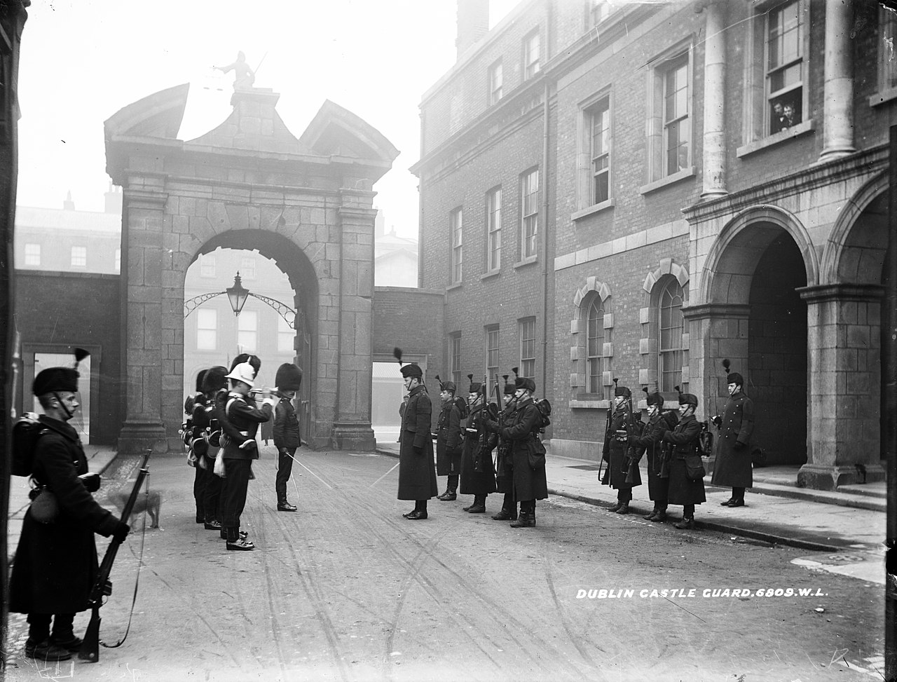

In 1907 the Irish Crown Jewels were stolen from the Castle. Suspicion fell upon the Officer of Arms, Sir Arthur Vicars, but rumours of his homosexuality and links to socially important gay men in London, may have compromised the investigation. The jewels have never been recovered.

At the very beginning of the Easter Rising of 1916 a force of twenty-five Irish Citizen Army members were able to seize the entrance and guard-room of the Castle, before reinforcements for the small garrison arrived.
During the Anglo-Irish War the Castle was the nerve centre of the British effort against Irish separatism. On the night of Bloody Sunday in 1920, three Irish Republican Army members Dick McKee, Conor Clune and Peadar Clancy, were tortured and killed there.
When the Irish Free State came into being in 1922, Dublin Castle ceased to function as the administrative seat. It served for some years as temporary Courts of Justice (the Four Courts, the home of the Irish courts system, had been destroyed in 1922). After the courts vacated the premises, the Castle was used for state ceremonies.
As President of the Executive Council, Éamon de Valera received credentials there from newly arrived ambassadors to Ireland on behalf of King George V in the 1930s. In 1938, Douglas Hyde was inaugurated as President of Ireland at the Castle. All inaugurations of subsequent presidents took place there since. President Erskine Hamilton Childers' lying-in-state took place there in November 1974, as did that of former President Éamon de Valera in September 1975.